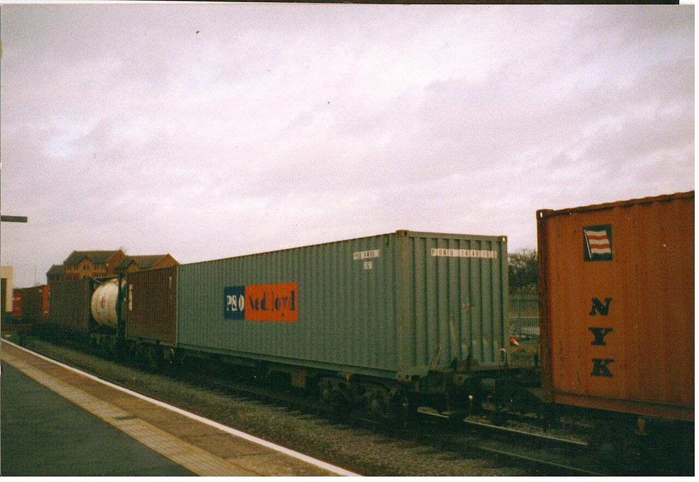

适用范围
W-01
先读警告，再读条款。铭牌与泵体上的编号对不上时，停手核对，不要按近似型号套参数：本册所有数值只对 CP-80/200 这一型有效。
1.1
本册管哪些泵
水平中开单级离心泵，流量 80 m³/h、扬程 200 m、转速 2950 r/min，介质为清水与含固量低于 0.5% 的冲洗液。泵组包含泵体、轴承箱、联轴器与底座，不含电机内部绕组；电机侧只写对中与地脚。
铭牌上的设备号是唯一身份。检修记录按设备号建，不按位置建：同一台泵挪到另一个工位，记录跟着走。
1.2
编号规则
章节号用 4.2.1 式样，四段以内；零件号两位，从 01 到 23，与爆炸图的引出编号、零件表的第一列逐一对齐。两套编号必须双向能跳：图上点编号跳到零件表对应行，零件表那一行再点回来。
换品牌等于重编整本手册的编号体系，所以本册的编号不许挪用、不许跳号，缺件时保留空号。
1.3
一般规定
拆任何紧固件之前先泄压、排空、断电、挂牌。断电图标是插头断开并带锁扣；高温图标是三角内加一道横线；禁止图标是圆加一道 45° 斜线——全站只此一处斜线图标，免得与警示框抢戏。
霜、油、水不得带入密封面。工具按规格列准备：内六角、扭矩扳手、百分表、铜棒、塞尺。
紧固扭矩 N·m
| 紧固件 | 螺纹 | 扭矩 N·m | 备注 |
|---|---|---|---|
| 机械密封压盖 | M10 | 42 | 对角落三遍 |
| 叶轮螺母 | M20×1.5 | 68 | 左旋螺纹 |
| 泵盖 | M16 | 96 | 分两遍过 |
| 轴承箱端盖 | M8 | 24 | 只压油封 |
| 吸入法兰 | M12 | 36 | 垫片一次一换 |
| 排出法兰 | M12 | 40 | 垫片不得挤出 |
| 联轴器 | M10 | 12 | 压紧弹性块 |
| 底座地脚 | M20 | 210 | 灌浆后复紧一次 |
列头写单位，行里不重复；数值右对齐并做小数点对齐，单位 N·m 只出现在列头。


泄压与排空
W-02
泄压未到零，扳手不上手。泵体里只要还有 0.05 MPa 的余压，密封压盖就不是“紧”，是顶住的；拆最后两颗螺栓时它会弹开。
2.1
泄到零再动手
关吸入阀，停泵，断开电机主回路并挂牌。开排空阀把泵体压力放到 0.3 MPa 以下，再放到底：本册把 0.3 MPa 当作“开始动作”的门槛，不是“可以拆密封”的门槛。
机械密封腔单独接冲洗口泄压，冲洗液温度降到 60 ℃ 以下才允许碰压盖。
2.2
排空与置换
从低点排空，高点开破真空。介质含固时先用清水置换两遍，置换液从密封冲洗口进、泵体低点出，不许反着走：反着走会把颗粒顶进密封面。


泄压与排空测点
| 测点 | 上限 MPa | 介质 | 允许残留 |
|---|---|---|---|
| 泵体排空阀 | 0.30 | 清水 | 无压 |
| 密封冲洗口 | 0.15 | 冲洗液 | 无压 |
| 吸入管低点 | 0.05 | 清水 | ≤0.02 MPa |
| 机械密封腔 | 0.30 | 冲洗液 | 无压 |
| 排出管高点 | 0.05 | 清水 | ≤0.02 MPa |
压力单位一律 MPa，写在列头；温度另写在 2.1 的条款里，不混进这张表。
断电、挂牌、上锁
断电顺序：停泵、断主回路、验电、挂牌、上锁，五步顺序不许并。挂牌上写设备号 P-204 与操作人，牌留在原处直到本体完工。
高温部位在 60 ℃ 以上时，三处图标——断电、高温、禁止——必须同时贴在控制柜门上；图标 1.4px 方头线宽，12px 下也要认得出来。
3.1
零件图与零件表
一台离心泵拆成 23 个零件，单线画出：轮廓 0.6px、轴心线 0.4px，一律不许填色块。每件带引出编号，编号是等宽的，点图上任何一个编号都会跳到零件表里对应的那一行。
W-03
编号对不上就停手。图上 07 是机械密封，零件表第 7 行必须是同一件；对不上说明这一版的图与表不是同一次印刷。
0.6px、轴心线 0.4px，全图没有一处填充。零件 07 到 23 按编号逐件画出，每件 40ms；悬停时该件线宽从 0.6px 加到 1.2px，120ms。
图为本页用内联 SVG 单线绘制，不是照片。
3.2
零件表 · 23 件
| 编号与名称 | 材料 | 紧固与间隙 | 检查项 | 图上位置 |
|---|---|---|---|---|
01 吸入法兰 | 铸铝 | M12 · 36 N·m | 密封面无径向划伤 | 看剖面 |
02 泵体蜗壳 | 灰铸铁 | — | 内壁无汽蚀坑 | 看剖面 |
03 耐磨环 | 铜合金 | 间隙 0.35–0.55 mm | 与叶轮的径向间隙 | 看剖面 |
04 叶轮 | 不锈钢 | 螺母 68 N·m | 六片后弯叶片无裂纹 | 看剖面 |
05 叶轮螺母 | 不锈钢 | 68 N·m | 左旋螺纹，防松垫片 | 看剖面 |
06 键 | 45 号钢 | 侧隙 0.02 mm | 与键槽贴合无松动 | 看剖面 |
07 机械密封 | 碳化硅／石墨 | 压量 2.5–3.5 mm | 拆前泄压到 0.3 MPa | 看剖面 |
08 密封压盖 | 灰铸铁 | M10 · 42 N·m | 对角分三次拧紧 | 看剖面 |
09 轴套 | 不锈钢 | 磨损 ≤0.20 mm | 超过即更换 | 看剖面 |
10 泵盖 | 灰铸铁 | M16 · 96 N·m | 垫片一次一换 | 看剖面 |
11 泵轴 | 45 号钢 | 跳动 ≤0.03 mm | 轴颈无拉伤 | 看剖面 |
12 轴套螺母 | 不锈钢 | 24 N·m | 与轴套端面贴紧 | 看剖面 |
13 轴承箱 | 灰铸铁 | — | 油位在视镜中线 | 看剖面 |
14 前轴承 | 深沟球 6208 | 游隙 0.08–0.12 mm | 150 ℃ 热装 | 看剖面 |
15 后轴承 | 深沟球 6208 | 游隙 0.08–0.12 mm | 150 ℃ 热装 | 看剖面 |
16 油视镜 | 有机玻璃 | 24 N·m | 无裂纹、无渗油 | 看剖面 |
17 放油塞 | 45 号钢 | 24 N·m | 铝垫圈压平即换 | 看剖面 |
18 油封 | 丁腈橡胶 | 唇口朝内 | 装前涂 ISO VG 46 | 看剖面 |
19 联轴器 | 灰铸铁 | 对中 0.05 mm | 百分表两向读数 | 看剖面 |
20 弹性块 | 聚氨酯 | 间隙 1.5 mm | 八块成组更换 | 看剖面 |
21 电机轴 | 45 号钢 | 对中 0.05 mm | 与泵轴同轴度 | 看剖面 |
22 排出法兰 | 灰铸铁 | M12 · 40 N·m | 垫片不得挤出 | 看剖面 |
23 底座地脚 | 型钢 | M20 · 210 N·m | 垫铁成对、点焊固定 | 看剖面 |
这张表与上一张图的编号互相交叉引用：点图上的引出编号，这一行底色闪一次 80ms；点行尾的“看剖面”，图上那一件加粗。23 件里没有一件是装饰。
4.1 联轴器与轴承箱
W-04
扭矩没复位，泵不许进检修记录。压盖螺栓的 42 N·m 是唯一进记录的数字；读数差 2 N·m 以上按 TORQUE-29 挂起。
4.1.1
先拆联轴器
松开联轴器弹性块螺栓前，百分表先架在泵轴与电机轴上各读一次对中：径向 0.05 mm、端面 0.03 mm。这两组读数是复位时的参照，少了它只能“看着差不多”装回去。
轴承箱放油从低点放油塞走，油温低于 60 ℃ 再放；油品型号写 ISO VG 46，容量 1.2 L，加到位后油位落在视镜中线。
4.1.2
轴承滚道只许看，不许摸
拆下的轴承放在无纺布上，滚道与保持架不许直接接触台面。游隙用塞尺量，0.08–0.12 mm 之外换新；热装温度 150 ℃，不许用气焊烤。

4.2 机械密封拆卸参数
| 项目 | 单位 | 目标值 | 公差 |
|---|---|---|---|
| 压盖螺栓扭矩 | N·m | 42 | ±2 |
| 密封压量 | mm | 3.0 | 2.5–3.5 |
| 密封面平面度 | mm | 0.02 | ≤0.02 |
| 冲洗液压力 | MPa | 0.15 | ±0.02 |
| 轴套径向磨损 | mm | 0.05 | ≤0.20 |
| 静环座间隙 | mm | 0.50 | 0.35–0.55 |
最后那一行是空的，行高与上面每一行完全一致：手册原版在这一行被油墨糊掉过，参数找不回来了。它留在这里，提醒读者有些数据是真的丢了。
4.2.1
拆卸步骤
一，泄压到 0.3 MPa 以下并读到零；二，拆压盖四颗 M10，对角分三遍松开；三，取出静环与动环，环面朝上放在无纺布上；四，抽出轴套，量磨损；五，冲洗密封腔，异物清干净。每一步做完在检修记录上打一次勾，勾打不全不允许进下一步。
4.3 扭矩复位与检修记录
4.3.1
按 42N·m 复位
压盖螺栓按对角分三遍拧到 42 N·m：第一遍 20 N·m 预紧，第二遍到 42 N·m，第三遍只校不转。扭矩扳手每半年校一次，读数记在检修记录里，不记在便签上。
叶轮螺母 68 N·m、泵盖 96 N·m、地脚 210 N·m，全部按本册第 1.1 节那张表逐条过一遍；对中复查 0.05 mm，手动盘车两圈无卡涩才算完。
4.3.2
油品与加注
轴承箱 ISO VG 46 齿轮油 1.2 L，密封冲洗液用 32 号液压油、压力 0.15 MPa。两种油不许混：混了以后视镜里会出现一层挂在壁上的膜，那本身就是故障。
复位参数
| 项目 | 单位 | 目标值 | 公差 |
|---|---|---|---|
| 压盖螺栓扭矩 | N·m | 42 | ±2 |
| 叶轮螺母扭矩 | N·m | 68 | ±3 |
| 泵盖螺栓扭矩 | N·m | 96 | ±4 |
| 联轴器对中 | mm | 0.05 | ≤0.05 |
| 叶轮与耐磨环间隙 | mm | 0.45 | 0.35–0.55 |
| 轴承游隙 | mm | 0.10 | 0.08–0.12 |
| 轴承箱油品 | 油品型号 | ISO VG 46 | 1.2 L |
| 密封冲洗液 | 油品型号 | 32 号液压油 | 0.15 MPa |
检修记录
这台泵还没有录入检修记录。把铭牌上的设备号填进上方输入框。
每一条记录都带三个数：扭矩 42 N·m、间隙 0.45 mm、油品 ISO VG 46。缺一个数的记录不算记录，按 TORQUE-29 处理。
扭矩未复位到 42 N·m
压盖螺栓扭矩未复位到 42 N·m（错误码 TORQUE-29）：本次读数 34 N·m，比目标值低 8 N·m，超出 ±2 的公差。
按 4.3.1 的顺序重来：第一遍 20 N·m 预紧，第二遍到 42 N·m，第三遍只校不转。扳手型号与批号写进记录，免得下一班拿另一把没校过的扳手复紧一遍。
挂起期间这台泵不算“已复位”：TORQUE-29 会一直挂在这台 P-204 上，直到记录里出现 42 N·m 的那一行。
读数还是 34 N·m。错误码 TORQUE-29 未清除，第 1.1 节那张扭矩表的其余条目不受影响。
动效与降级
- 滚动：章节索引条吸顶，滚到哪一章高亮哪一格，切换
100ms阶跃、无过渡；索引条自身不模糊、不加底板投影。 - 悬停：规格表行底色转
#E0DACB（100ms，行不位移）；爆炸图零件线宽0.6px加到1.2px（120ms）。 - 警示框：悬停时斜纹沿
45°方向平移8px（160ms线性），像卷警示带转了一格。角度只有这一个。 - 加载：先出纸底与穿孔
160ms，再按章节顺序逐章出现，每章240ms；爆炸图零件按编号07到23逐个画出，每件40ms。 - 转场：翻章时警示框先合上
120ms再展开180ms，斜纹角度与纹宽在这两段里都不变。 - 微交互：点零件编号跳到零件表，该行底色闪一次
80ms。
光标图样：24px 内六角扳手，热点在开口处，只接指针精细的设备。
减少动态时的再发明（prefers-reduced-motion: reduce）：斜纹平移与逐件描画停止推进，但警示机制完整静态保留——45° 斜纹的纹宽 8px、间隙 8px、#E4B400 实色块与 #1A1A17 编号全部按原值静态呈现，爆炸图的 0.6px 轮廓、0.4px 轴心线与 0.5px 高光一个都不减，零件编号照旧可点。
窄屏那一套也照旧：640–899px 钢丝圈改成顶部穿孔条，仍保留 3px 圈位与 18px 间距；<640px 规格表转成两列键值对，警示框斜纹角度仍然固定 45°，只把过渡压到 120ms 的不透明度切换。

断点行为
| 宽度 | 装订与栅格 |
|---|---|
≥1280px | 双栏 5:5，规格表向右出血 96px 并整体下沉 18px；左缘钢丝圈固定不动，72px 装订边距里的穿孔间距仍是 18px。 |
900–1279px | 规格表折进正文下方，出血收到 48px；装订边距压到 96px（72px 圈位加 24px 外距），钢丝圈继续固定在左缘。 |
640–899px | 单栏纵向；钢丝圈改成顶部穿孔条，保留 3px 圈位与 18px 间距，暗色的纸张切边从左侧改到上侧。 |
<640px | 单栏；规格表转成两列键值对，列头与单位跟着每一行走；章节编号从左缘挪到条款上方，仍然固定 4 字符宽，警示框斜纹角度仍固定 45°。 |
基础 6px 基线：章节间 88px、条款间 24px、规格表行距 22px，三者都是 6 的整数倍。栏距 18px、外距 56px，10 栏的宽度在四档里都不重算，只重排。